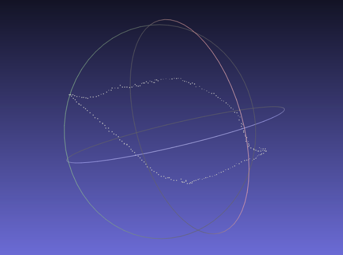

Three Dimensional Reconstruction from multiple Photos
Goal
Recover 3D shape of an unknown object from information extracted from different views.
Specification: This project deals with the three dimensional reconstruction of leaves by given multiple photos which are taken by normal cameras. Or more academically saying, reconstructing 3D point cloud with sets of frames in unknown angles. In order to start, environments should be set up beforehand, such as visual studio with openCV and PCL lib.
My Work
♣ Developed Filtering Feature Sequence as knn ratio, symmetry and ransac after surf.
♣ esigned Surface-Stereo Lookup Table for scoring current frame plane coordinates with accordingly triangle three-dimensional coordinates in tracking processing iterations.
♣ Implemented three-dimensional reconstruction on random reddish-green epipremnum aureum.
♣ Theoretically analyzed performance benefit under filter algorithm and lookup table.
Method
Step 1: Feature Detection and Matching: SURF algorithm. There are various algorithms for feature detections, please find more if you are interested, such as basically corner-like, sliding windows, eigenvalues, or more SIFT etc. Output is Fundamental Matrix.
Example: SURF implementation with OpenCV as:
Improvement: Since our photos are taken by normal cameras, they are in such bad conditions. I developed filtering feature sequence to filter out bad matches and this included process such as KNN ratio test, symmetry test, and RANSAC.
Step 2: Structure from Motion(SFM): refers to the process of estimating three-dimensional structures from two-dimensional image sequences which may be coupled with local motion signals.
Improvement: First, Fundamental Matrix to Essential Matrix.This can be done using a camera calibration matrix K, generated from a provided frame. (Notice: this action is to avoid projective ambiguity. Furthermore, if we use SVD to decompose Essential Matrix, we can obtain Camera Matrix solutions. However, constructing the Camera matrix gives four possible combinations, and it is difficult to tell which solution is valid in the real world unless triangulation is performed.)
Step 3: SolvePnP: It takes a set of 2D-3D matching points, Calibration matrix and Distortion matrix to output Camera Matrix. Here, I designed Lookup Table which stores 2D coordinates of current frame and its triangulated 3D coordinates. After this, we get a new camera matrix that minimizes projection error.
Step 4: Triangulation: Extended Iterative-LS method. I assign weight in each iteration to generate more accurate result.
Example:
Step 5 (optional): Getting Contour: KNN search to find the normalization of each points, then by compare this value with each other, we will choose those points with large gradients.

References
[1] Jiyuan Shen, Xuemin Yang and Zengzhi Fan, Software Engineering Design Report, 2015 [pdf]
[2] Open Source Computer Vision (OpenCV) Library, [webpage]
[3] The Point Cloud Library (PCL), [webpage]
[4] Noah Snavely, Bundler: Structure from Motion (SfM) for Unordered Image Collections, [webpage]